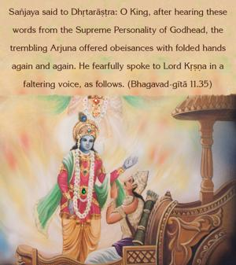

Sañjaya said to Dhṛtarāṣṭra: O King, after hearing these words from the Supreme Personality of Godhead, the trembling Arjuna offered obeisances with folded hands again and again. He fearfully spoke to Lord Kṛṣṇa in a faltering voice, as follows.

As we have already explained, because of the situation created by the universal form of the Supreme Personality of Godhead, Arjuna became bewildered in wonder; thus he began to offer his respectful obeisances to Kṛṣṇa again and again, and with faltering voice he began to pray, not as a friend, but as a devotee in wonder.